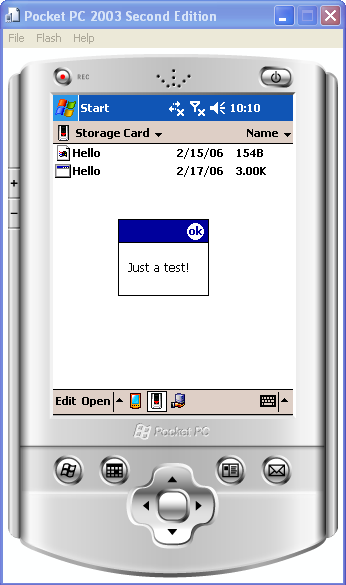
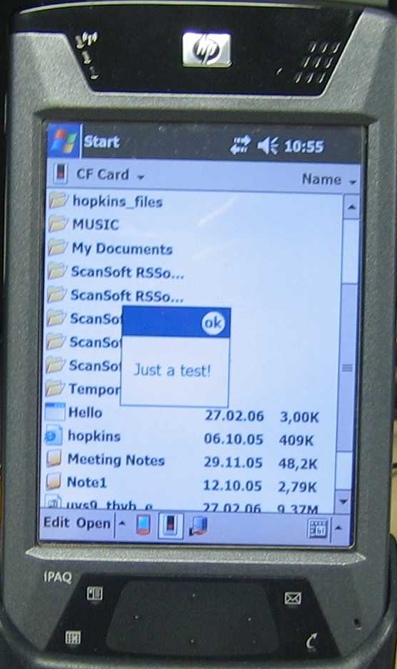
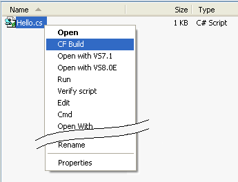

One of the most frequently asked questions about the CS-script
is a question about running the script engine on PocketPC.
Unfortunately Compact Framework (CF) is not ready yet for
running dynamically loaded/compiled managed code.
The reason for this is that CF does not have implementation of
the
C# ICodeCompiler. Another words the following code would not compile:
ICodeCompiler compiler = (new CSharpCodeProvider()).CreateCompiler();
If, in any
future version of
CF, Microsoft includes the CSharpCodeProvider implementation the
CS-Script will work on such platform.
Starting from version 1.3 CS-Script supports
pluggable custom compilers.
It means that if you have third-party implementation of the
CLR
compiler that can work on CF it can be used instead of
Microsoft
compiler and CS-Script engine will be able to run C# scripts under CF.
Basically you need any workable C# compiler either managed or native
that would work on CF.
I have tried to resolve the
problem by isolating the compiler from full
version of .NET Framework and bringing it on CF but did not
succeeded. Also I was trying to use third-party compilers (after all it
does not matter what software does the conversion C#->IL).
The
Pocket
C# compiler
looked promising but I could not get it working. Even despite the fact that I have
seen some reports dated 2004 that it actually did work.
However CS-Script provides some very limited support for CF. It
comes in a form of
cfbuild.cs
script, which allows building a CF compatible managed executable from
any appropriate the C# script.
You can compile the "Hello-World" script (
hello.cs) into executable for
WinCE5.0 with the following command:
//cscs cfbuild hello
This is the content of the
hello.cs:
using System;
using System.Windows.Forms;
class Script
{
static public void Main(string[] args)
{
MessageBox.Show("Just a test!");
}
} |
The produced executable can be run on the MS Device emulator or real
PocketPC.
MS Device emulator:

PocketPC:

You can also use
cfbuild.cs
to install/uninstall the shell extensions for building CF based
executables from the scripts:
//cscs cfbuild /i

Note: when you execute
cfbuild.cs
for the first time you will be asked to specify the location of the CF
installed on your PC. You have to do it only once (
cfbuild.cs will
remember CF location for the next sessions.
See Also
Alternative
Compilers